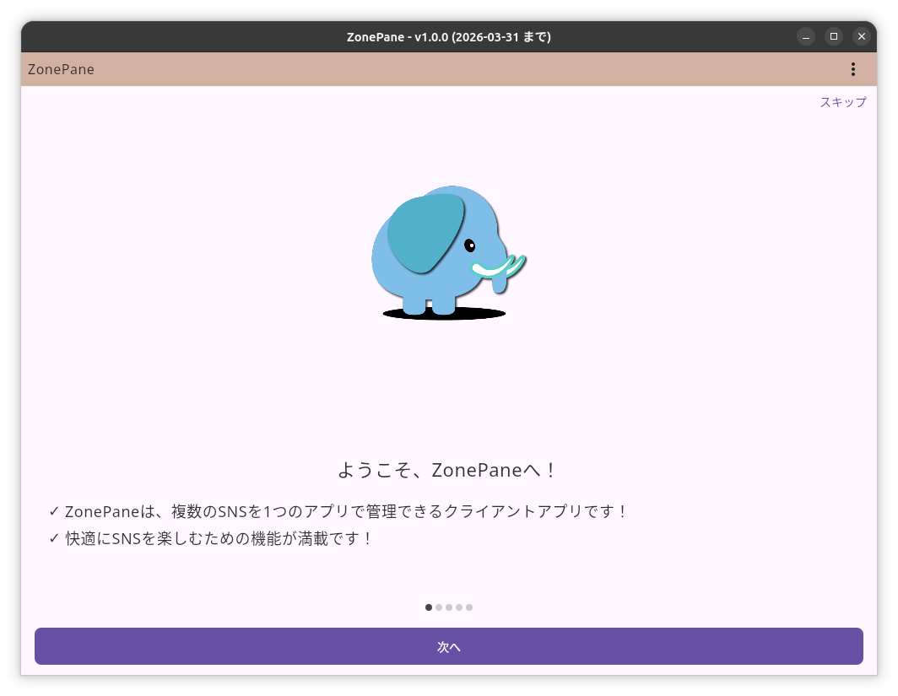
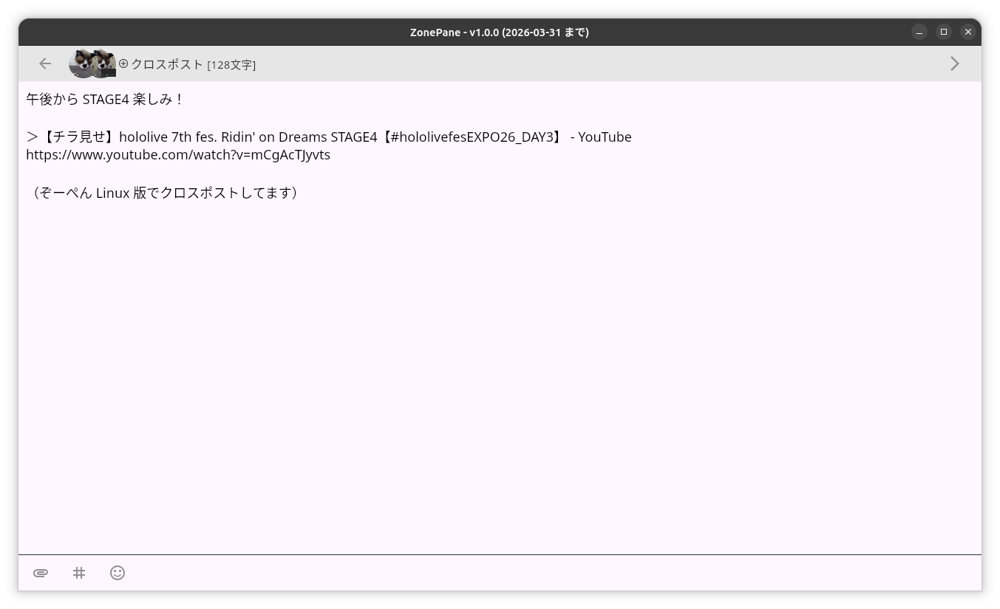
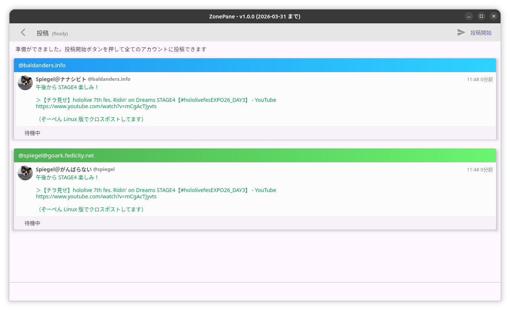
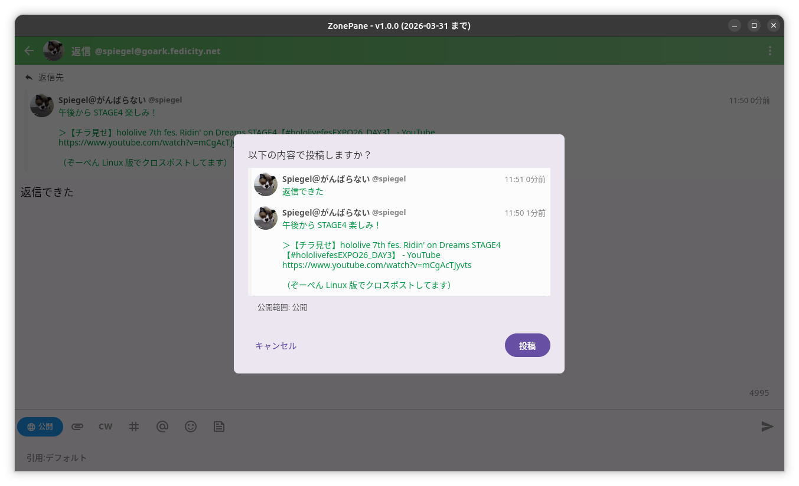
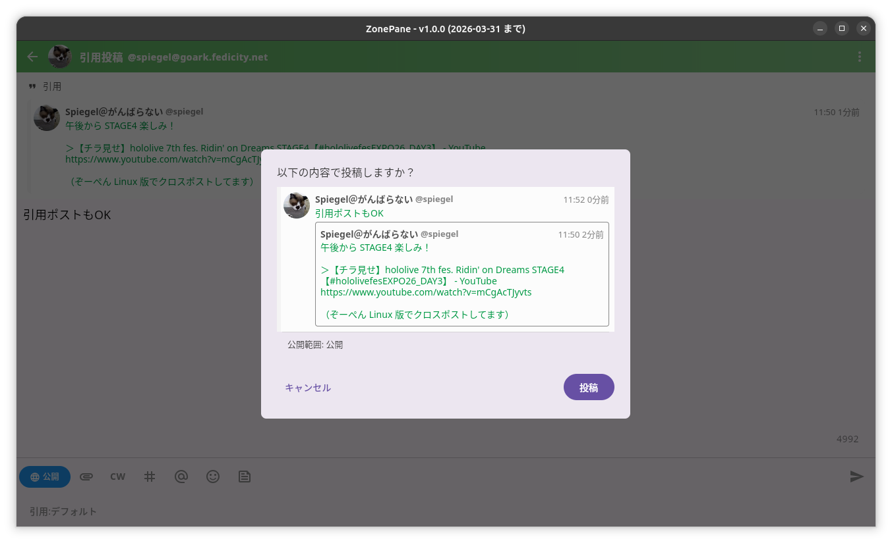
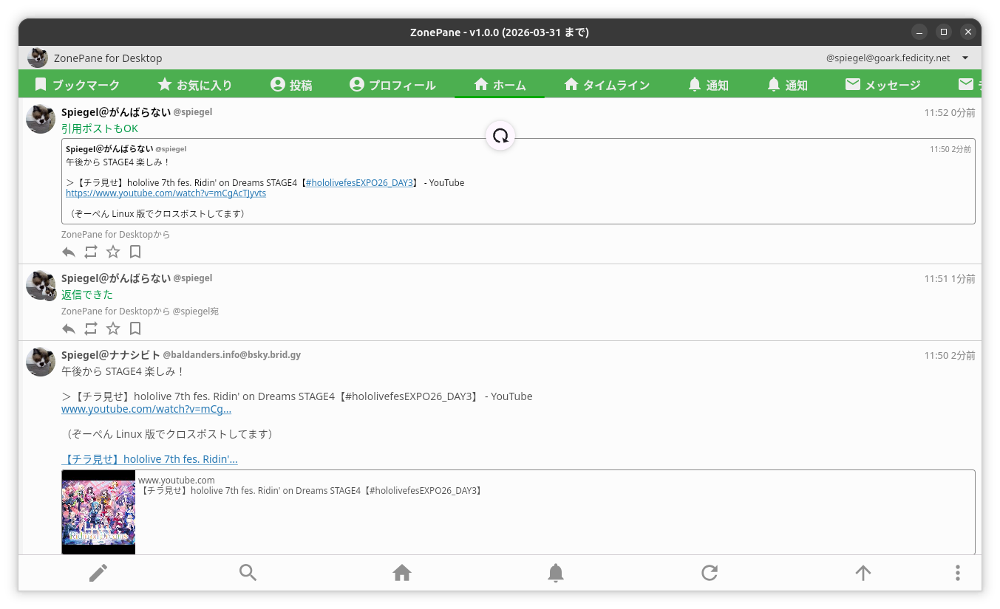

デスクトップ版ぞーぺんに期待！

昨日の “hololive 7th fes. Ridin’ on Dreams STAGE3” よかったねぇ。 FLOW GLOW 初 fes. っスよ。 ライブを観ながら Mastodon の TL をチェックしてたんだけど
なんと！ そういえば TL で何やら作業をポストされてたな。 とりあえず Windows 版をゲットしてミニ PC にインストールしクロスポストを試してみた。
画像データの添付ができなかったものの，基本機能は概ね出来てる感じ。 こうなると Linux 版が欲しいよなぁ，と呟いたのだが Go で CLI ならともかくマルチプラットフォームは面倒だよねぇ。 Linux は需要少ないだろうし…
と思ってたら
まじすか！ ありがとうございます 🙇
それじゃあ自宅の Ubuntu 機（Ubuntu Desktop 25.10）に入れて動かしてみるか。

{kind=link}
問題なく起動。 Mastodon と Bluesky のアカウントを追加してクロスポストを試してみる。

{kind=link}
クロスポストより
実は IM (Input Method) が上手く動かくて日本語が入力できなかった。 別のエディタで投稿内容を書いてコピペして対応。

{kind=link}
投稿より
クロスポスト自体は問題なくできた。 ついでに投稿したものに対して返信と引用投稿を試してみた。

{kind=link}
返信より

{kind=link}
引用投稿より
同じように日本語が不自由な以外は問題なさそう。 結果はこんな感じ。

{kind=link}
投稿結果より
概ね使えてる。 強いて気になるところを挙げると（上で挙げた点も含める）
- クロスポスト時に画像データの添付ができない（普通の投稿であれば問題ない）
- 入力フィールドで IM が効かず日本語が入力できない（Ubuntu 環境のみ）
- タイムラインの最上部に達すると更新マークが表示されるが実際には何も起こらない。アクションボタンの更新は効く
- スワイプが使えないのでタブがたくさんあると一部が隠れてしまう（タブ部分をマウスホイールで横方向にスクロールしないかなぁ）
- タイムラインがマルチカラムにならないかなぁ
といったところか。 まぁ iOS 版をベースにしているそうなので今のところはこんなものかと。 つか iOS 版をベースにここまでできるんだ。 Compose 凄いなぁ。
なによりクロスポストとタイムラインの使い勝手はぞーぺんならではで，これに慣れると公式 Web アプリには戻れないのよ。
あとはマネタイズかな。 Windows 版と macOS 版はストアがあるので有料版の配布は難しくないんだろうけど Linux 版はねぇ。 Open Collective みたいな仕組みを使うなら継続的に払うよ，私は（大金は難しいけど）。 ちなみに Android 版はサブスクリプション契約している。
まぁ，のんびり応援していこう。